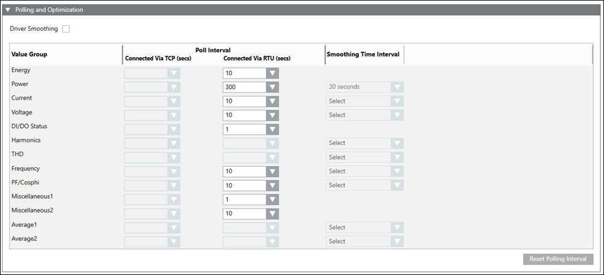
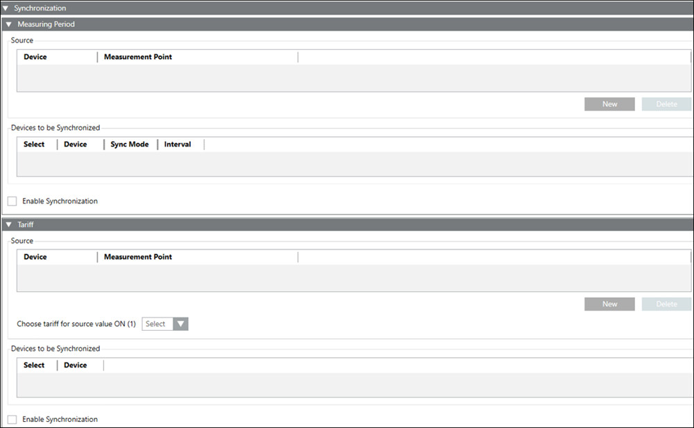

MODBUS Configuration
In Engineering mode, when you select the Powermanager root node, you must configure the parameters of the Modbus Configuration tab.
The following expanders let you configure the parameters of the Modbus Configuration tab:
Polling and Optimization Expander
The Powermanager application communicates with the devices by polling them at regular intervals. There are various poll groups defined; each of them having its own specific polling interval. You can configure the polling intervals using this expander. You can also configure driver smoothing and data smoothing in this expander. Smoothing is used to reduce the amount of communication and volume of data processed in the system. It reduces the communication load between drivers and other managers and the amount of data that is processed. The Poll interval is disabled by default with blank values. You can reset the polling intervals to their default values by clicking Reset.
- Driver Smoothing: Allows you to use the driver smoothing feature in Powermanager. The data is smoothed in the driver before being further processed by comparing the last read value with the current value. The current value is polled only when there is a change from the last read value in terms of percentage difference defined.
- Value Group: Displays the property group of the devices being polled.
- Poll Interval: Allows you configure the polling intervals for devices connected through TCP or RTU.
- Smoothing Time Interval: Modification of this parameter is not allowed.

Synchronization Expander
It allows you configure the measuring period and tariff synchronization functions in the powermanager.
- Measuring Period Expander:
- Source: Allows to select the source device and its corresponding digital input used for synchronization.
- Devices to be Synchronized: Allows you to select the target devices for measuring period synchronization. Also displays the target device, synchronization mode and the synchronization interval.
- Enable Synchronization: Select this checkbox to start synchronization.
NOTE: Synchronization of the measuring period for a device is enabled only if the synchronization mode of the device is set to bus and the interval length is set to 15. - Tariff Expander
- Source: Allows to select the source device and its corresponding digital input used for synchronization.
- Choose tariff as source value ON (1): Select the tariff to switch to when the source digital input is ON.
- Devices to be Synchronized: Allows you to select the target devices for tariff period synchronization.
- Enable Synchronization: Select this checkbox to start synchronization.
